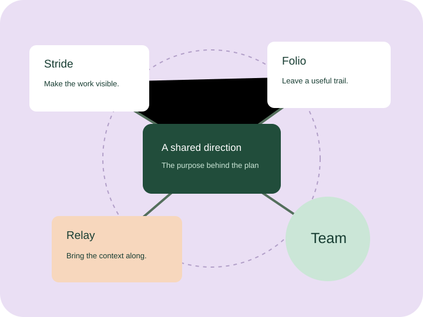

Clarity is a kindness
Explain the decision. Leave a useful trail for the next person.
OUR COMPANY
Threadwell is a fictional software company exploring a simple idea: people do their best work when they can see how their efforts connect.
Explore our values
Our illustrative story begins with a small team tired of searching for the decision behind the task.
That question shapes this fictional company: how can software make collaboration feel more considered? We imagine products that help people plan openly, share knowledge and support one another.
No company history, customer figures or business results on this site describe a real organization.
Explain the decision. Leave a useful trail for the next person.
A thoughtful question can change a team’s direction.
Consider the person using the tool and the person affected by the work.
Explore our sample team culture and fictional opportunities.
Meet the team we imagine